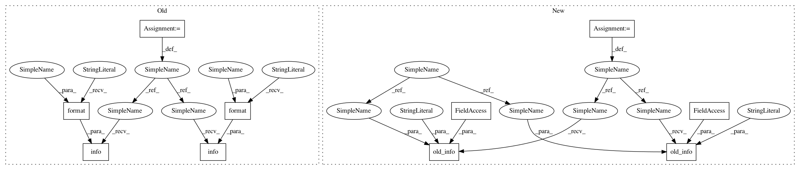

908c0c630a6c7c6e35b7bb0e172d41372bfb309d,python/ray/autoscaler/aws/config.py,,_configure_subnet,#Any#,203
Before Change
subnet_descr = [(s.subnet_id, s.availability_zone) for s in subnets]
if "SubnetIds" not in config["head_node"]:
config["head_node"]["SubnetIds"] = subnet_ids
logger.info("_configure_subnet: "
"SubnetIds not specified for head node, using {}".format(
subnet_descr))
if "SubnetIds" not in config["worker_nodes"]:
config["worker_nodes"]["SubnetIds"] = subnet_ids
logger.info("_configure_subnet: "
"SubnetId not specified for workers,"
" using {}".format(subnet_descr))
return config
After Change
format(config["provider"]["availability_zone"]))
subnet_ids = [s.subnet_id for s in subnets]
subnet_descr = [(s.subnet_id, s.availability_zone) for s in subnets]
if "SubnetIds" not in config["head_node"]:
_set_config_info(head_subnet_src="default")
config["head_node"]["SubnetIds"] = subnet_ids
cli_logger.old_info(
logger, "_configure_subnet: "
"SubnetIds not specified for head node, using {}", subnet_descr)
else:
_set_config_info(head_subnet_src="config")
if "SubnetIds" not in config["worker_nodes"]:
_set_config_info(workers_subnet_src="default")
config["worker_nodes"]["SubnetIds"] = subnet_ids
cli_logger.old_info(
logger, "_configure_subnet: "
"SubnetId not specified for workers,"
" using {}", subnet_descr)
else:
_set_config_info(workers_subnet_src="config")
return config
In pattern: SUPERPATTERN
Frequency: 3
Non-data size: 10
Instances
Project Name: ray-project/ray
Commit Name: 908c0c630a6c7c6e35b7bb0e172d41372bfb309d
Time: 2020-07-22
Author: maximsmol@gmail.com
File Name: python/ray/autoscaler/aws/config.py
Class Name:
Method Name: _configure_subnet
Project Name: ray-project/ray
Commit Name: 908c0c630a6c7c6e35b7bb0e172d41372bfb309d
Time: 2020-07-22
Author: maximsmol@gmail.com
File Name: python/ray/autoscaler/aws/config.py
Class Name:
Method Name: _configure_key_pair
Project Name: ray-project/ray
Commit Name: 908c0c630a6c7c6e35b7bb0e172d41372bfb309d
Time: 2020-07-22
Author: maximsmol@gmail.com
File Name: python/ray/autoscaler/aws/config.py
Class Name:
Method Name: _check_ami
Project Name: ray-project/ray
Commit Name: 908c0c630a6c7c6e35b7bb0e172d41372bfb309d
Time: 2020-07-22
Author: maximsmol@gmail.com
File Name: python/ray/autoscaler/aws/config.py
Class Name:
Method Name: _configure_subnet